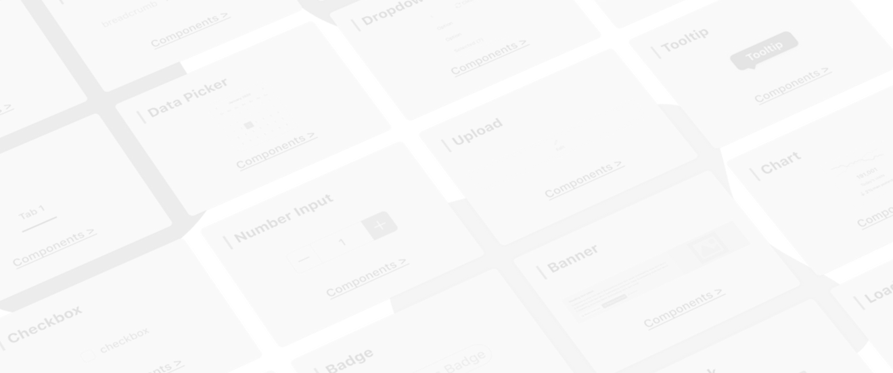
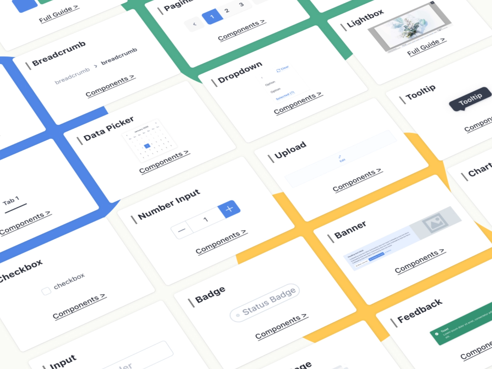


The V2.0 design system in SHOPLINE's e-commerce product line, used for the backend management pages of B2B products. It offers features like online store design and order processing and is one of the primary design systems.
However, due to the lack of clear management and usage guidelines, the library suffered from unclear usage scenarios, broken components, and poor discoverability. This slowed down the design process and made it difficult to maintain consistency across projects.
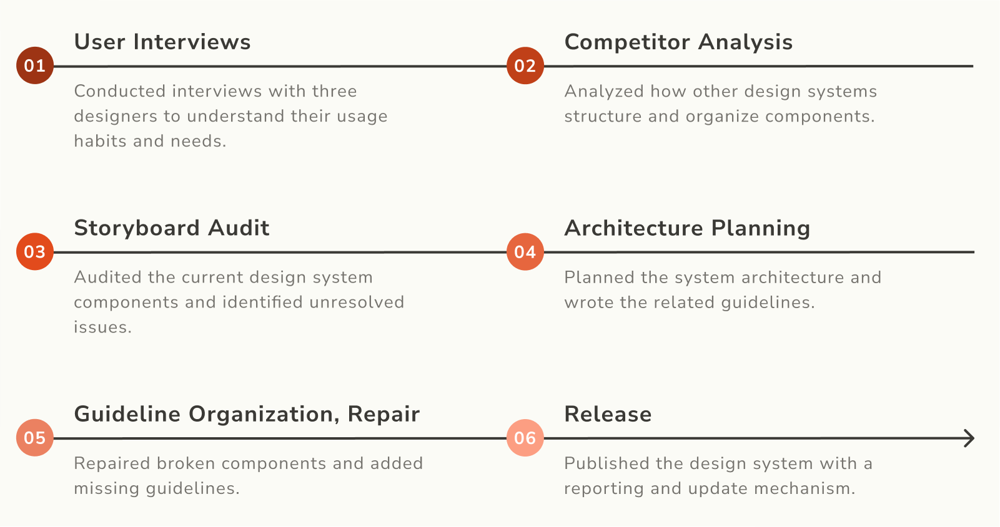
Without clear usage scenarios, designers had to look at existing pages or ask others verbally to confirm which patterns to use. This increased the risk of inconsistencies across the interface.
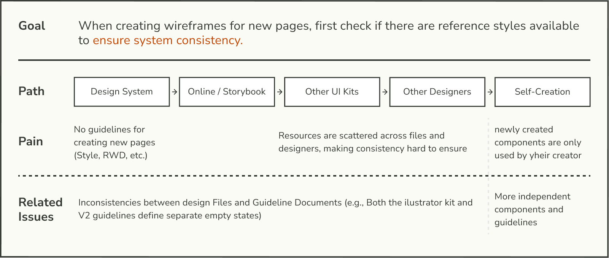
Designers often had to browse through large sections of the design system file just to find a component, rather than finding it through direct search.
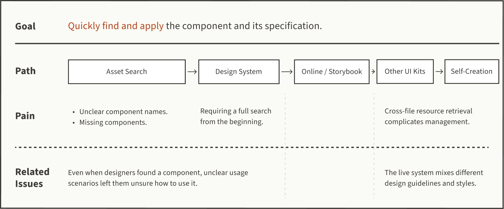
To maintain quality and align with designers' habits, components are organized using the following structure in Figma:
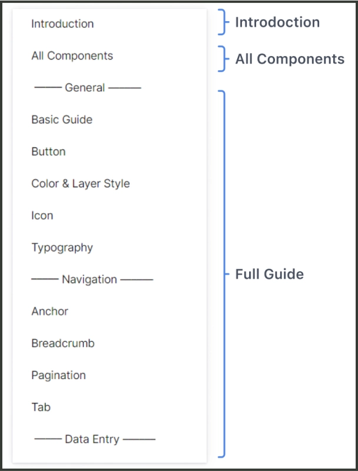
Provides a clear user manual outlining the design system's document architecture, along with instruction for creating, maintaining, and updating components.
Lists all components in the design system so designers can easily browse, reference and duplicate.
Shows the detail guideline for each component, including UI specification and usage scenarios.
All subcomponents are stored on one page, allowing users to easily find and use the components. The use of subcomponents also helps preserve the integrity of the overall design system.
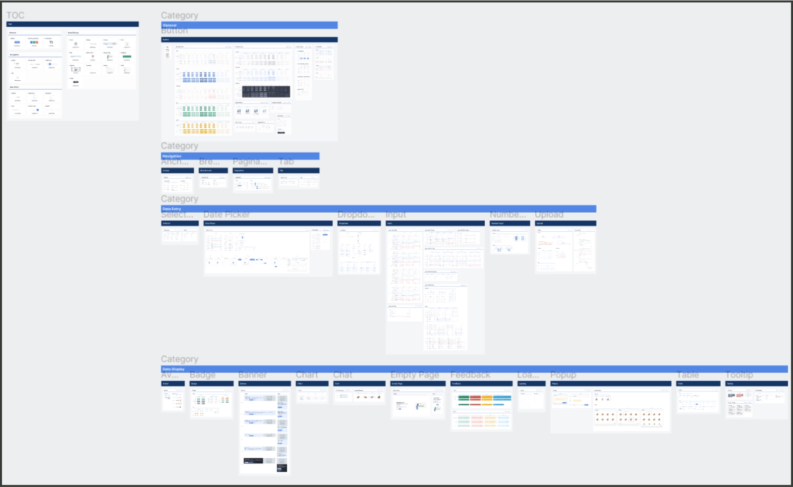
Links to the storybook and full guide are provided in the top right corner of each subcomponent section, allowing users to access the current component status and usage guideline.
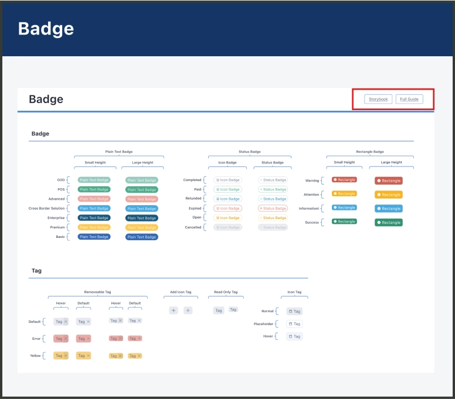
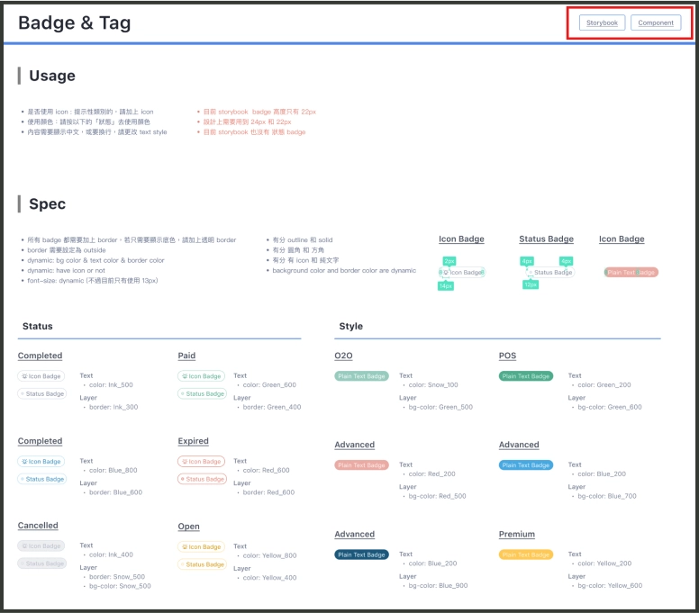
Create a checklist that standardizes components under the following seven fixed headings: Usage, Spec, Content, Layout, Application, Asset, and Components.
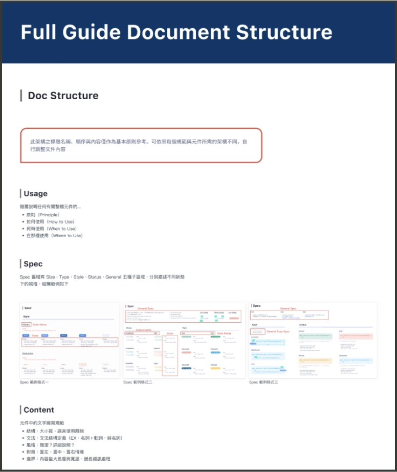
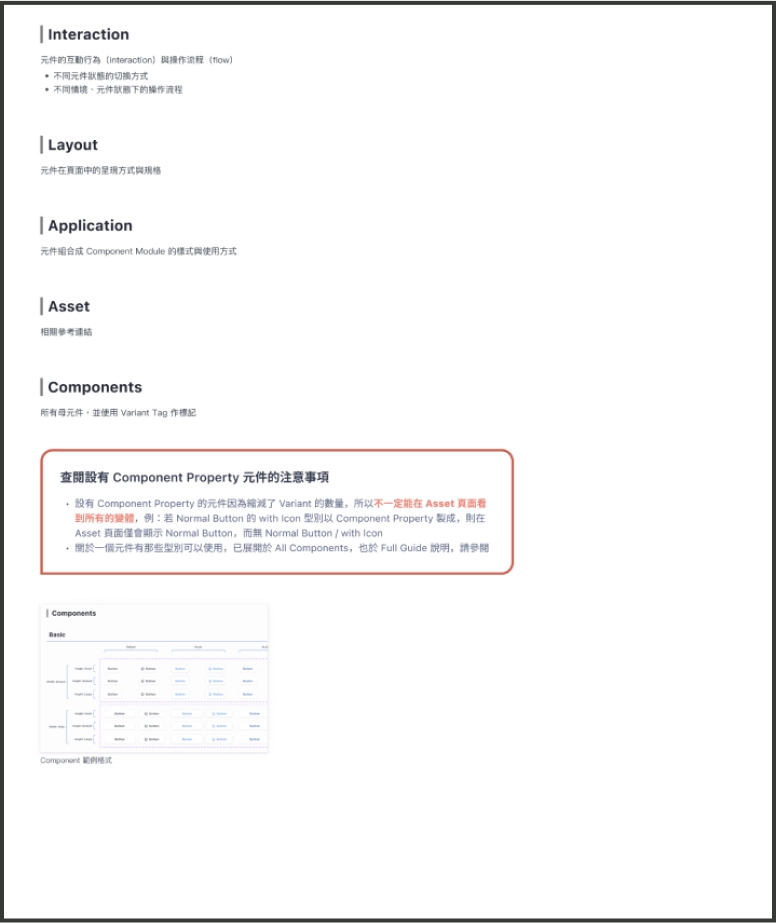
Record component issues and assign an owner. Review all pending issues during the weekly meeting and discuss potential solutions.
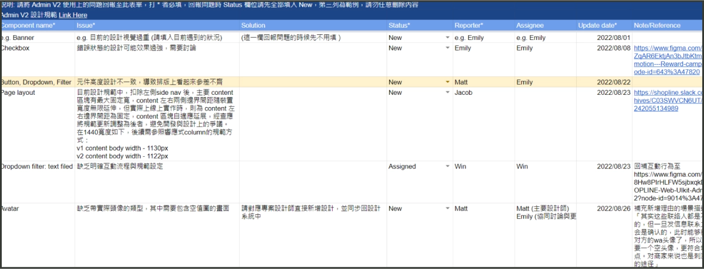